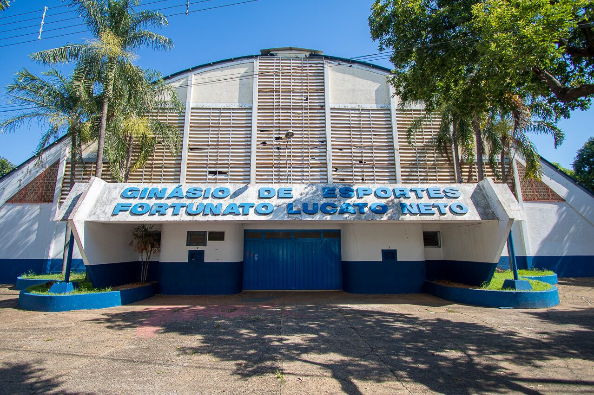
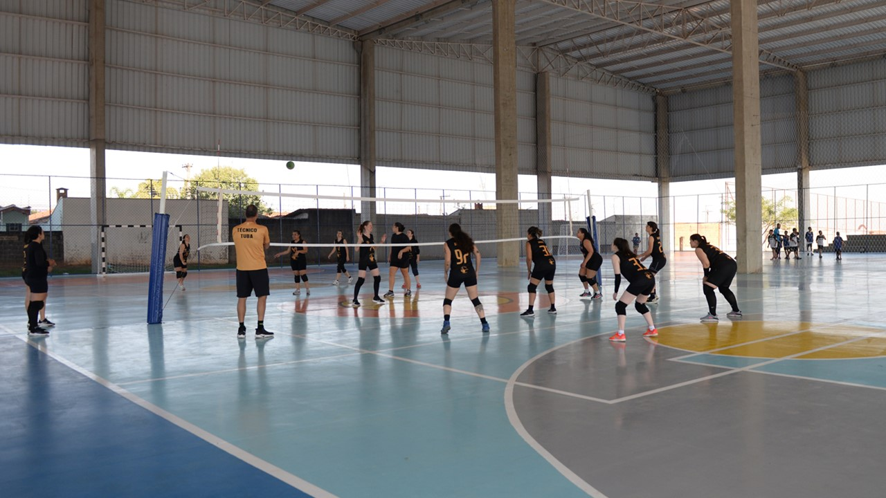

Futebol - Estádio Major Levy Sobrinho

O futebol é uma das paixões da cidade, com o Estádio Major Levy Sobrinho, conhecido como Limeirão, sendo palco de grandes jogos.
Basquete - Ginásio Vô Lucato
O basquete é muito forte em Limeira, com equipes que já participaram de campeonatos nacionais, tendo como palco principal o Ginásio Vô Lucato.
Futsal e Vôlei - Complexo Poliesportivo
O futsal e o vôlei também são esportes de destaque, com campeonatos locais e regionais acontecendo no Complexo Poliesportivo da cidade.